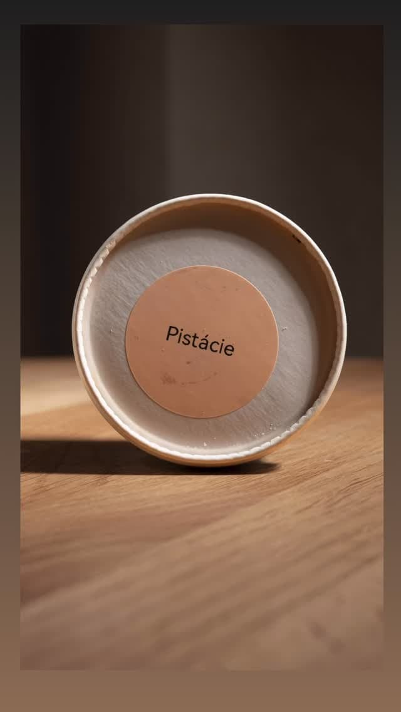

01 — putra, pod. jm.
Staročesky: čerstvé máslo.
Jméno jsme si nevybrali náhodou. Do těsta dáváme jen pravé máslo, vejce z volného výběhu a ovoce, které zrovna voní na Zelňáku.


Jméno jsme si nevybrali náhodou. Do těsta dáváme jen pravé máslo, vejce z volného výběhu a ovoce, které zrovna voní na Zelňáku.
Narozeniny, křtiny, svatba nebo jen úterý. Řekněte nám chuť a náladu, my domyslíme zbytek. Stačí 3 dny předem.

Pár míst u velkého okna, flat white z čerstvě pražené kávy a voda z kohoutku zdarma. Tady je svět v pořádku.


Křupavá pusinka, mascarpone, lesní ovoce.

Odpalované těsto, malinový krém, lyofilizované maliny.

Máslový linecký korpus, bourbonská vanilka, jahoda.

Jen v létě. Sicilské pistácie, nic navíc.

Dorty na objednávku
Pavlova s mučenkou, čokoládový s lískovými oříšky nebo klasický ovocný. Dorty od 1 290 Kč (Ø 18 cm, 8–10 porcí). Objednávejte alespoň 3 dny dopředu.
Vánoce 2026
Letos si vánoční cukroví objednáte jedním formulářem. Krabice 0,5 kg za 690 Kč, 1 kg za 1 290 Kč. Objednávky do 10. 12., výdej 18.–22. 12. na Táborské.
Zamluvit krabici cukroví
5,0 ★ z 74 hodnocení na Google
„Skvělý dezerty a pečivo, moc dobrá káva a útulná atmosféra. Tady je svět v pořádku!“
„Famózní dezerty, ten řez! Kafe taky výborné. Vodu volně k načepování ceníme.“

Přijďte